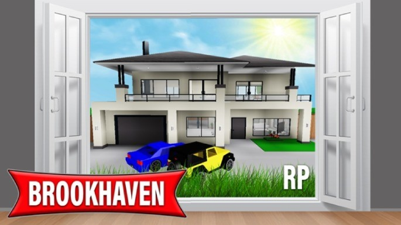
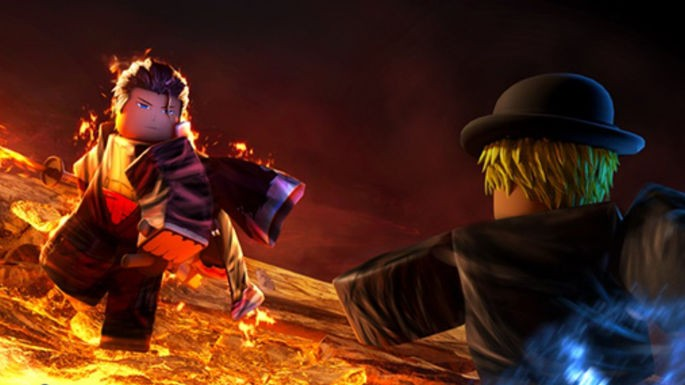
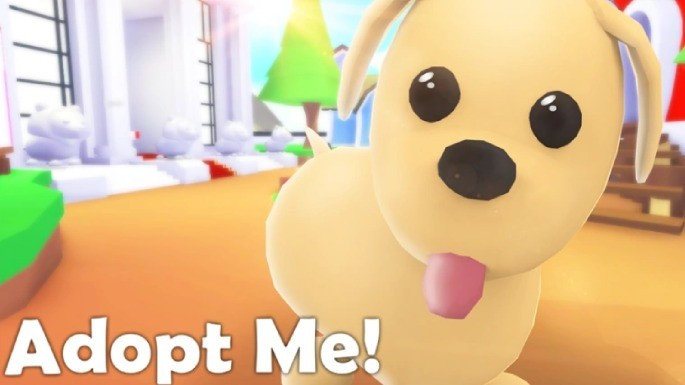

Roblox é uma plataforma de jogos realmente criada por gamers e para gamers. O site se descreve como "Plataforma da Imaginação", e permite que os jogadores criem seus próprios jogos e compartilhe-os em um catálogo que já contém milhões de títulos. Para ajudar você a conhecer e explorar a plataforma Roblox, selecionamos 3 jogos que se destacam em qualidade e popularidade. Tem jogo para todos os gostos. Confira!
| NOMES | GÊNERO |
|---|---|
|  | Urbano |
|  | Aventura |
|  | RPG |